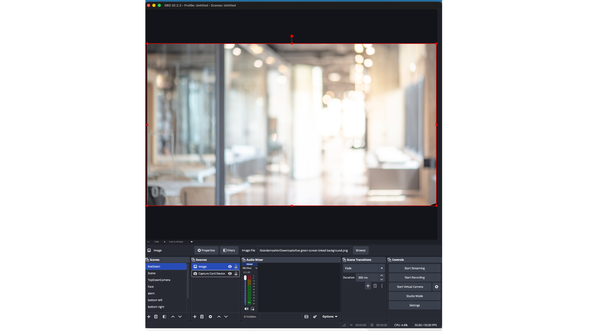

Let's review the OBS settings screenshot to verify the layer order and scene configuration.

In the screenshot above, look closely at the Sources panel:
Image (the background) is at the top of the list.Capture Card Device (the camera) is below it.⚠️ This is incorrect! OBS renders sources from bottom to top. If your background image is above your camera source, it will completely cover you!
To fix this and achieve a proper green screen effect:
Image source in the Sources panel.Capture Card Device.Once the layers are ordered correctly, your setup is ready for fast production recording! 🚀